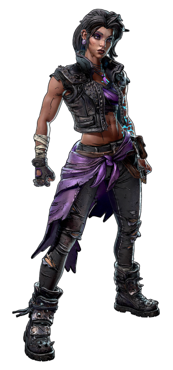
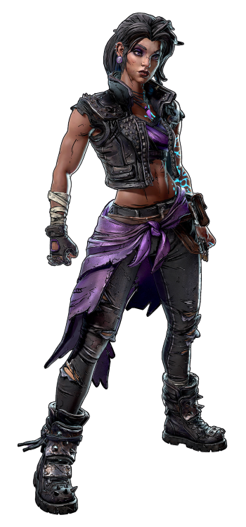
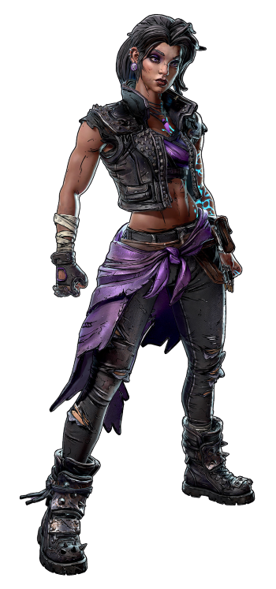

Borderlands es una saga de juegos desarrollado por Gearbox Software, de tipo "rol de acción". Puedes escoger a varios buscacámaras con los que jugar para subir nivel y mejorar el árbol de habilidades.
En el equipamiento del personaje va de 2 a 4 armas, un escudo protector, una modificación de granada y un modificador de clase que te va a aportar habilidades extras.
EL algoritmo de creación que da soporte a una estimación de mil millones de armas, es llamado "Procedural Content Creation System" (Sistema de creación de contenido procedural), este sistema genera armas y objetos variando sus habilidades, poder de siparo, cadencia, precisión, añade también efectos elementales (fuego, electricidad, corrosión, explosión, slug o incluso regenerar munición). También aporta un sistema de colores para indicar la rareza del armas.
Sumérgete en este universo, y disfruta de una experiencia de loot, disparos, explosiones y con un toque de humor absurdo único.
